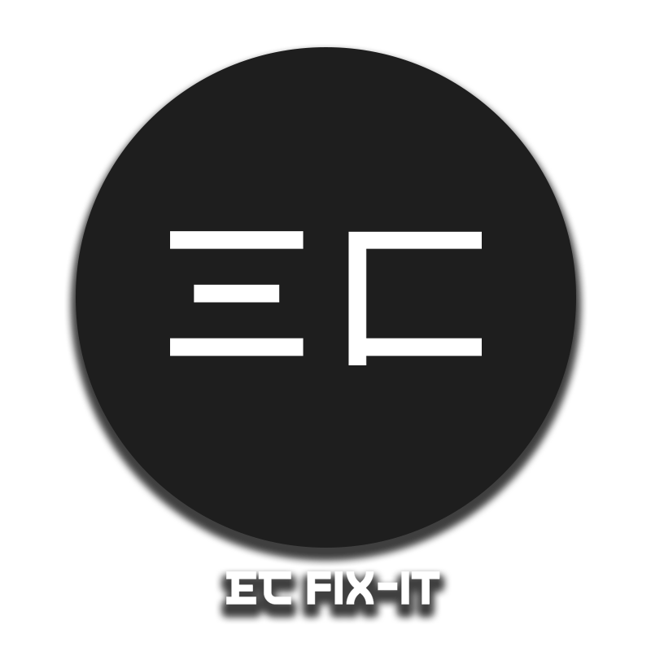

EC-FIX-IT
Test parameters, check requirements, and prepare your SIPs and MIPs for review.
Parameters
Preview dates and languages across AppLovin iterations, local HTML files, and localhost previews.
Applying reloads the preview. Full controls include detected holiday ranges, Previous/Next and auto-refresh.
Parameter Fixer
Add supported date and language parameter handling to current or bulk SIP/MIP HTML files.
The installed companion reads and patches files locally. Original files stay unchanged.
Checker
Local HTML and localhost previews are checked automatically on connection.
Static checks are review aids, not MRAID certification. Test fixed creatives in the target container. Source snippets remain in the installed companion.
Review
Capture screenshots, collect the original HTML and manage your review collection in the installed companion.
Existing review items stay in extension storage. Keep the creative active in its browser window for screenshots. ChatGPT transfer depends on its page controls and still needs live validation.